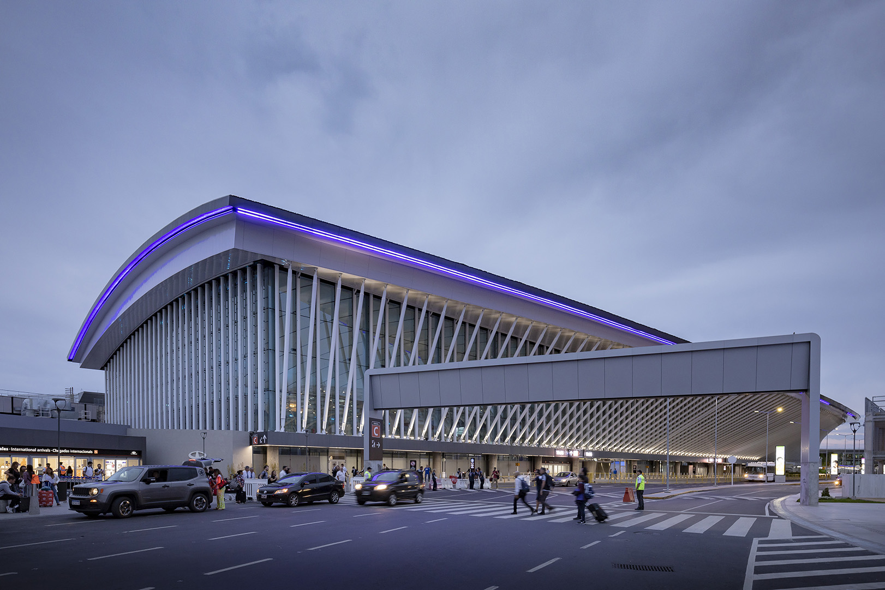
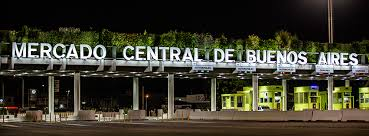
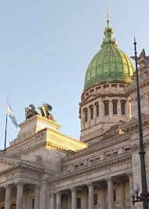
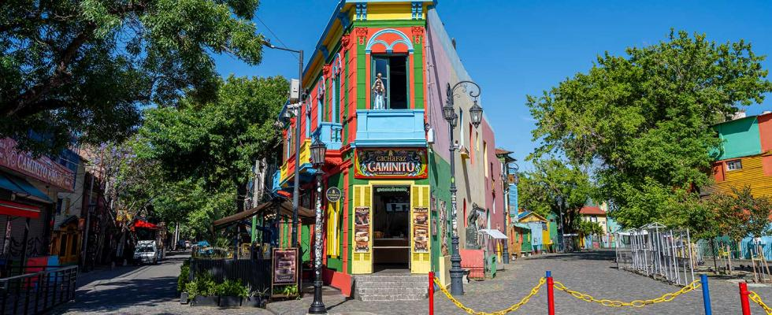

Recorrido Semirápido (Autopista)
Paradas estratégicas que conectan el aeropuerto con el centro porteño y La Boca.
-
Aeropuerto Internacional Ezeiza Dársena exclusiva frente a Terminal A. Partida.

-
Mercado Central Parada estratégica sobre Autopista Riccheri.

-
Liniers (Av. Gral Paz) Punto de conexión clave para la zona oeste.

-
Congreso (Av. Entre Ríos e Yrigoyen) Descenso para conexión con Subte Línea A.

-
Plaza de Mayo Conexión con Casa Rosada y Subtes A, D, E.

-
La Boca Terminal final - Ramal A (Aeropuerto Ezeiza por Liniers).
